Chapter 2 Statistiques descriptives
Le but de ce document est de rappeler les différents indicateurs utilisés dans les statistiques descriptives.
2.1 Distribution
Dans le cas qualitatif, on appele distribution la répartition des probabilités pour tous les points pour laquelle la distribution existe.
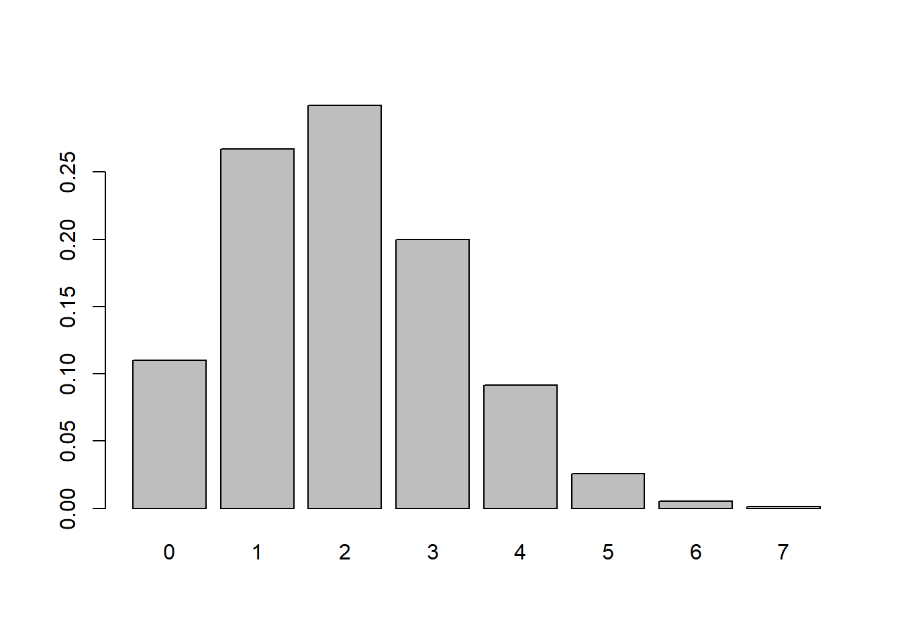
Nous voyons pour une distribution binomiale la distribution, cela représente un lancer de dés avec ici, la somme de dix lancers, avec 0,2 la probabilité d’obtenir un 1 et 0,8 la probabilité d’obtenir un 0. Ici la probabilité d’obtenir un score de 3 est d’environ 20%.
Dans le cas quantitatif, on appele distribution la répartition des probabilités pour tous les points pour laquelle la distribution existe. La plus connu est la loi normale:
La loi normale prends deux paramètres : l’écart-type et la moyenne.
Si on fait varier l’écart-type : on a une forme plus aplatie ou inversement.
plot(density(rnorm(100000,0,0.5)),main="Loi normale",ylab="Densité")
lines(density(rnorm(100000,0,1)),main="Loi normale",ylab="Densité")
lines(density(rnorm(100000,0,1.5)),main="Loi normale",ylab="Densité")
lines(density(rnorm(100000,0,2)),main="Loi normale",ylab="Densité")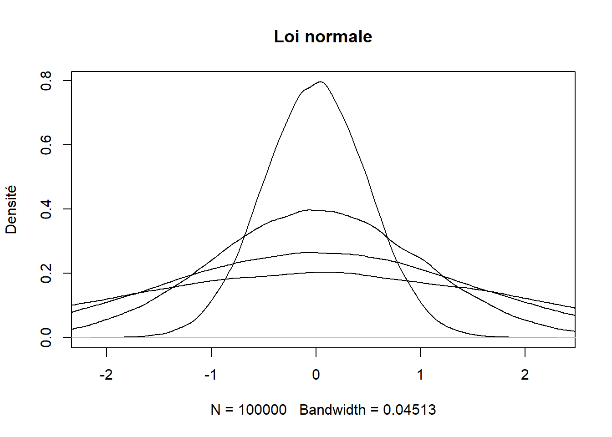
Si on fait varier la moyenne : la “pointe” de la courbe varie dans son positionnement.
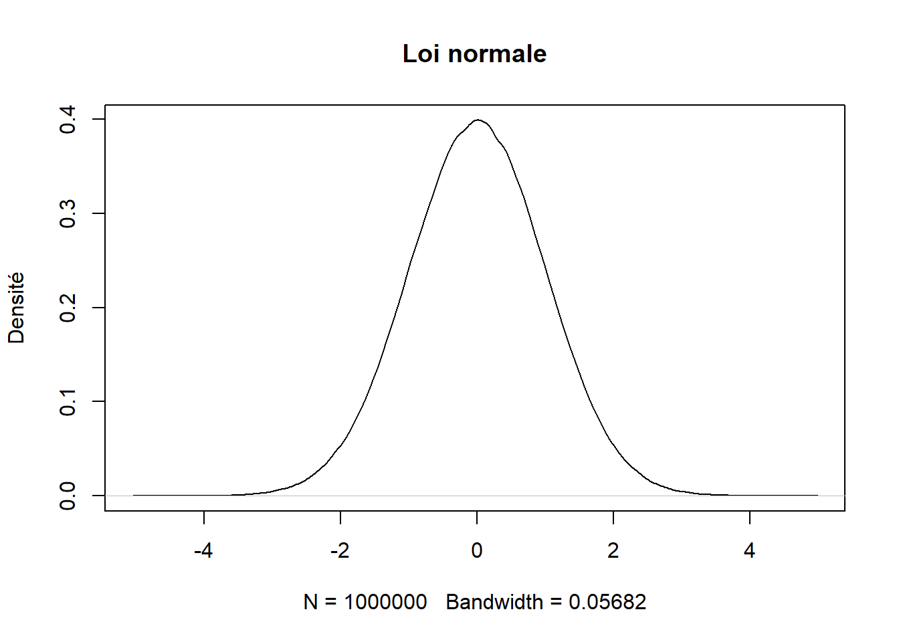
2.2 Indicateurs de position (mesures de tendance centrale)
La plupart des indicateurs statistiques s’inspire de la loi normale : Les indicateurs de position donnent une idée de où se répartissent les points.
Le premier indicateur est la moyenne arithmétique, elle a de nombreux prolongements en mathématiques, physique, etc.
Il y a des indicateurs proches comme la moyenne géométrique, la moyenne harmonique, etc. La moyenne arithmétique est la plus utilisée.
2.2.1 Moyenne arithmétqiue
En statistiques, on retrouve cette moyenne dans l’ANOVA, la régression, le test de Student, etc.
C’est celle qui se retrouve dans la plupart des cas dans les formules.
y=rnorm(1000000,1,1)
plot(density(y),main="Normale de moyenne 1",xlab="Valeurs de x",ylab="Densité")
abline(v=1,lty=3)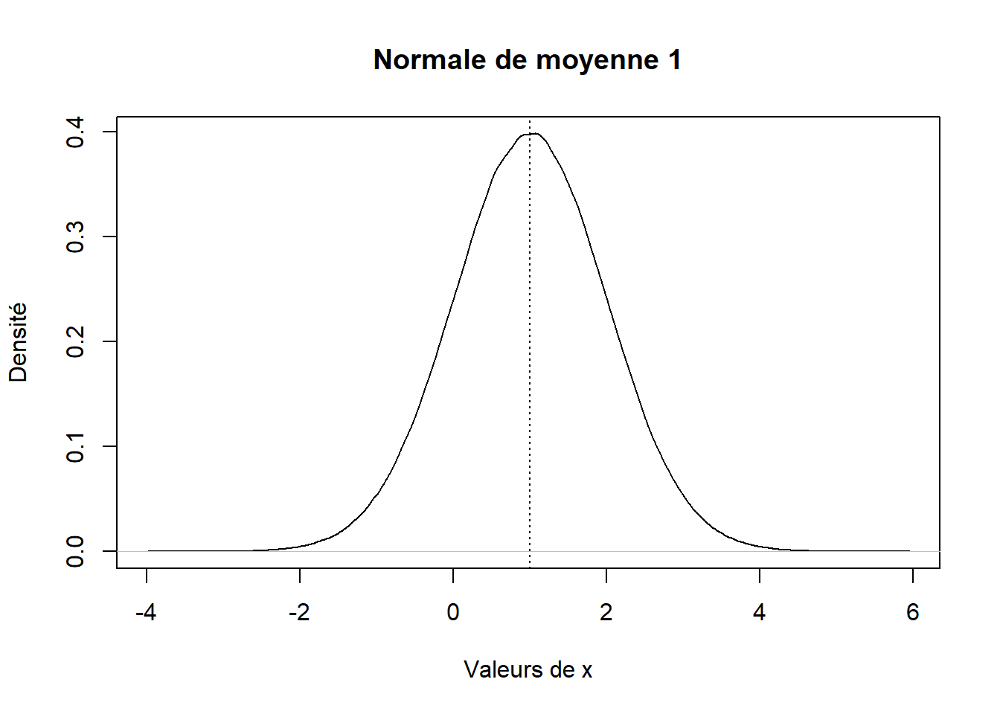
y=rchisq(1000000,10)
plot(density(y),main="Loi du Chi²",xlab="Valeurs de x",ylab="Densité")
abline(v=mean(y),lty=3)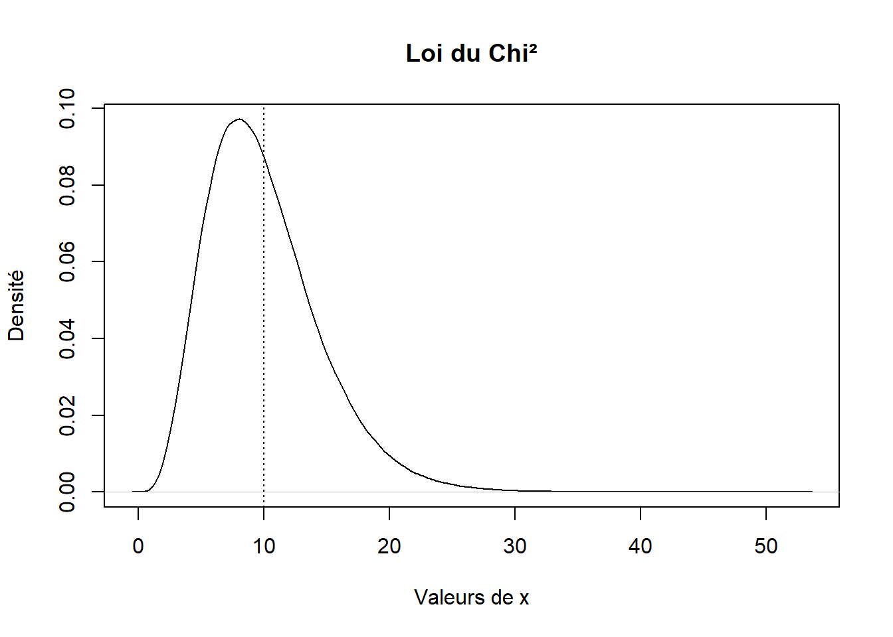 Dans des cas comme la loi normale, l’indicateur de position est centrale (ie. qu’il y a une symétrie). Mais souvent, la répartition des poids n’est pas symétrique et la moyenne est décalée brisant la symétrie comme dans l’illustration du Chi².
2.3 Indicateur de dispersion
L’indicateur de dispersion le plus fréquent est l’écart-type. L’écart-type est le carré des écarts à la moyenne (arithmétique).
Il vient naturellement avec la loi normale normale où 50% des observations sont à 1 écart-type autour de la moyenne.
Plus l’écart-type est grand plus les écarts entre les valeurs observées et la moyenne sont grands. Les points sont plus dispersés.
y=rnorm(1000000,1,1)
plot(density(y),main="Normale de moyenne 1",xlab="Valeurs de x",ylab="Densité")
abline(v=1,lty=3)
abline(v=1-sd(y),lty=1,col="red")
abline(v=1+sd(y),lty=1,col="red")
text(1-sd(y)+0.5*sd(y),0.2+strheight("Ya"),expression(sigma))
text(1+0.5*sd(y),0.2+strheight("Ya"),expression(sigma))
arrows(
1-sd(y),0.2-strheight("Ya"),
1,0.2-strheight("Ya"),
length=0.05,code=3
)
arrows(
1,0.2-strheight("Ya"),
1+sd(y),0.2-strheight("Ya"),
length=0.05,code=3
)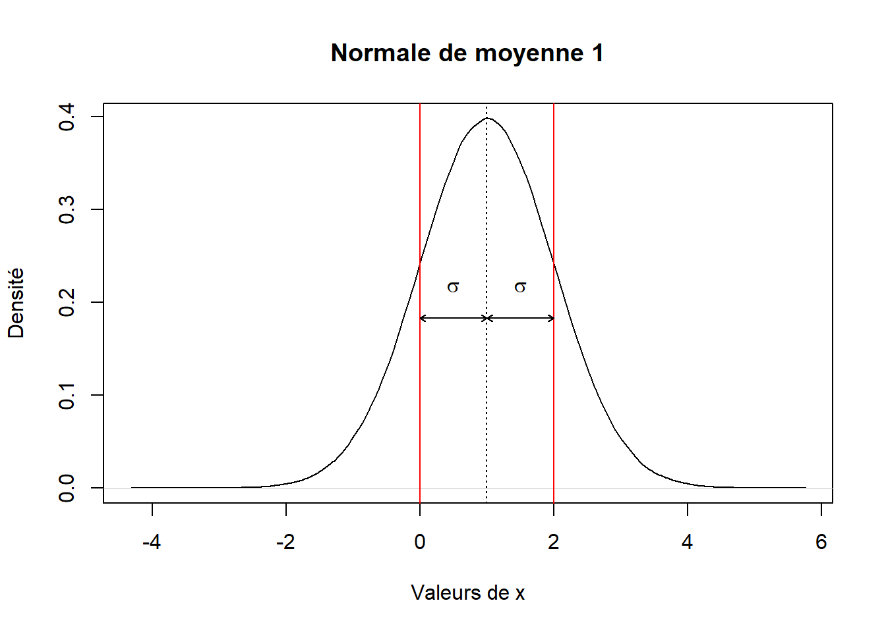 Un écart-type et la moyenne sont de même unité : par exemple si on mesure le poids d’objets, on a par exemple moyenne et écart-type en kg.
Donc si on divise la moyenne par l’écart-type, on obtient un nombre sans unité ou plutôt avec comme unité un écart-type. Ce type d’opération de diviser par l’écart-type une ou des valeurs observées est appelé réduire une variable.
Cette opération est fréquemment associée au fait de soustraire par la moyenne avant de réduire. Donc les observations deviennent centrées autour de la moyenne. On appelle ces deux opérations centrer/réduire une variable soit scale en R.
Quand on analyse plusieurs variables d’unités très différentes en statistiques, avec d’un côté des chiffres très grands et de l’autre côté des petits par exemple, on est amené à centrer/réduire pour manipuler des chiffres de même ordre de grandeur.
2.4 Les indicateurs de la loi normale
skweness et kurtosis.
La kurtose est l’aplatissement de la distribution par rapport à la loi normale.
rr <- rnonnorm(1000000, mean = 0, sd = 1, skew = 0, kurt = 0)
r2 <- rnonnorm(1000000, mean = 0, sd = 1, skew = 0, kurt = -0.5)
r3 <- rnonnorm(1000000, mean = 0, sd = 1, skew = 0, kurt = 3)
d1 <- density(rr$dat)
d2 <- density(r2$dat)
d3 <- density(r3$dat)
plot(0,0,type="n",
xlim=range(c(d1$x,d2$x,d3$x)),
ylim=range(c(d1$y,d2$y,d3$y)),
main = "",
xlab="Valeurs",
ylab="Densité"
)
lines(d1,lty=1,col=brewer.pal(3,name = "Set2")[1])
lines(d2,lty=2,col=brewer.pal(3,name = "Set2")[2])
lines(d3,lty=3,col=brewer.pal(3,name = "Set2")[3])
legend("topright",c("Kurtose = 0","Kurtose = -0.5","Kurtose = 3"),
lty=c(1,2,3),
col=brewer.pal(3,name = "Set2"))Le coefficient d’asymétrie ou skewness indique lui la symatrie par rapport à l’axe centrale de la distribution normale.
rr <- rnonnorm(9000000, mean = 0, sd = 1, skew = 0 , kurt = 0)
r2 <- rnonnorm(9000000, mean = 0, sd = 1, skew = -0.5, kurt = 0)
r3 <- rnonnorm(9000000, mean = 0, sd = 1, skew = 0.5, kurt = 0)
d1 <- density(rr$dat)
d2 <- density(r2$dat)
d3 <- density(r3$dat)
plot(0,0,type="n",
xlim=range(c(d1$x,d2$x,d3$x)),
ylim=range(c(d1$y,d2$y,d3$y)),
main = "",
xlab="Valeurs",
ylab="Densité"
)
lines(d1,lty=1,col=brewer.pal(3,name = "Set2")[1])
lines(d2,lty=2,col=brewer.pal(3,name = "Set2")[2])
lines(d3,lty=3,col=brewer.pal(3,name = "Set2")[3])
legend("topright",c("Skewness = 0","Skewness = -0.5","Skewness = 0.5"),
lty=c(1,2,3),
col=brewer.pal(3,name = "Set2"))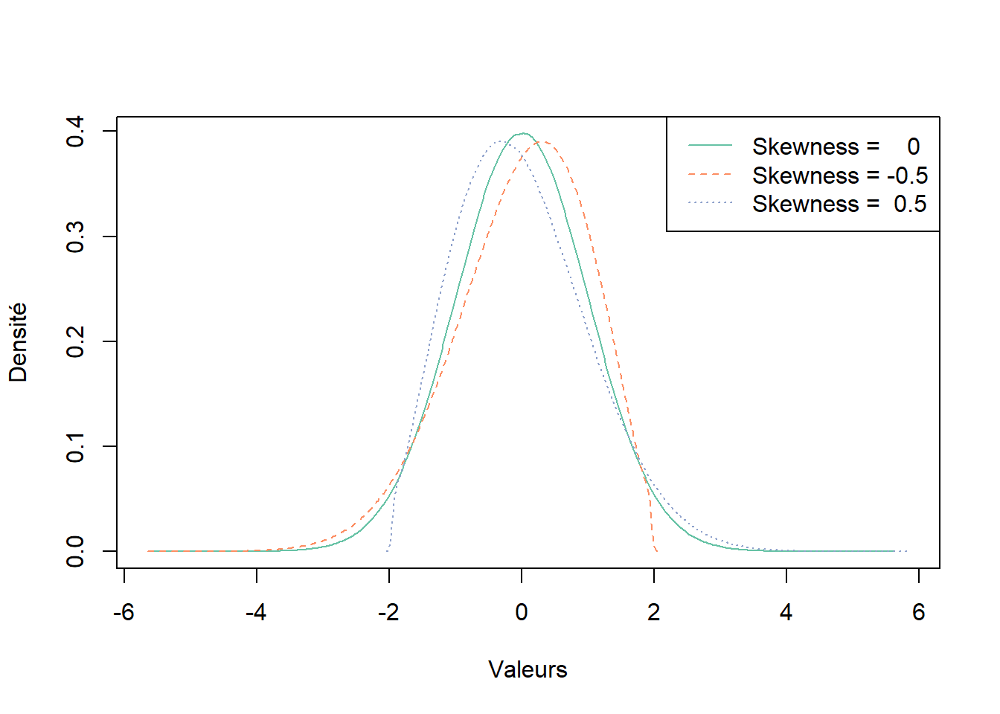
2.5 Quantiles, ex de la loi normale.
Les quantiles représentent la proportion d’individus qui se retrouvent en deça d’une valeur. Par exemple, pour une loi normale :
rr <- rnorm(1000000)
dd <- density(rr)
plot(0,0,type="n",main="",xlab="Valeurs",ylab="Densité",
xlim=range(dd$x),ylim=range(dd$y))
lines(dd)
polygon(c(dd$x[dd$x < -1],rev(dd$x[dd$x < -1])),
c(dd$y[dd$x < -1],rep(0,length(dd$y))[dd$x < -1]),
col=rgb(0,0,1,0.5),border = NA)
abline(v=-1)
text(-3,0.3,paste(round(100*pnorm(-1),2)," % en deça de ",round(-1,2)))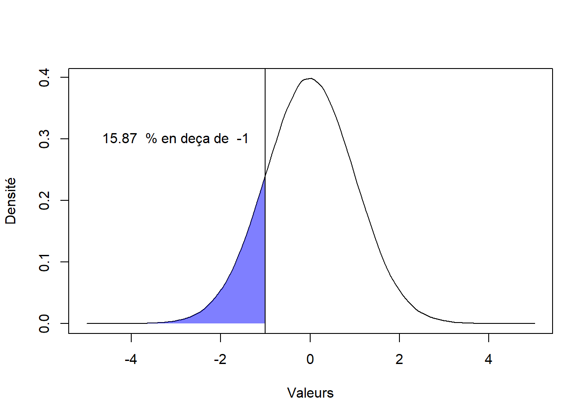
plot(0,0,type="n",main="",xlab="Valeurs",ylab="Densité",
xlim=range(dd$x),ylim=range(dd$y))
lines(dd)
polygon(c(dd$x[dd$x < 1],rev(dd$x[dd$x < 1])),
c(dd$y[dd$x < 1],rep(0,length(dd$y))[dd$x < 1]),
col=rgb(0,1,0,0.5),border = NA)
abline(v=1)
text(-3,0.3,paste(round(100*pnorm(1),2)," % en deça de ",round(1,2)))plot(0,0,type="n",main="",xlab="Valeurs",ylab="Densité",
xlim=range(dd$x),ylim=range(dd$y))
lines(dd)
polygon(c(dd$x[dd$x < 1],rev(dd$x[dd$x < 1])),
c(dd$y[dd$x < 1],rep(0,length(dd$y))[dd$x < 1]),
col=rgb(0,1,0,0.5),border = NA)
abline(v=1)
text(-3,0.3,paste(100*round(pnorm(1),2)," % en deça de ",round(1,2)))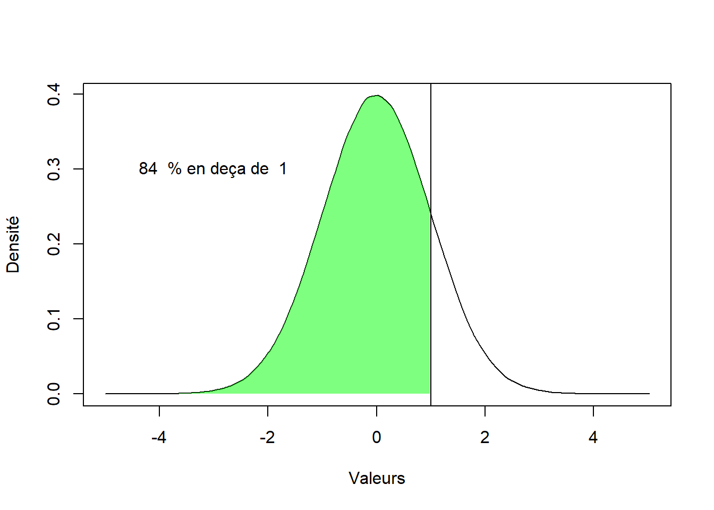
Soit entre la moyenne et les écart-types pour la loi normale, il y a 68 % des individus.
plot(0,0,type="n",main="",xlab="Valeurs",ylab="Densité",
xlim=range(dd$x),ylim=range(dd$y))
lines(dd)
polygon(c(dd$x[dd$x > -1 & dd$x < 1],rev(dd$x[dd$x > -1 & dd$x < 1])),
c(dd$y[dd$x > -1 & dd$x < 1],rep(0,length(dd$y))[dd$x > -1 & dd$x < 1]),
col=rgb(0,1,0,0.5),border = NA)
abline(v=-1,lty=3)
abline(v= 1,lty=3)
text(-3,0.3,paste(100*round(pnorm(1) - pnorm(-1),2)," % entre -1 et 1"))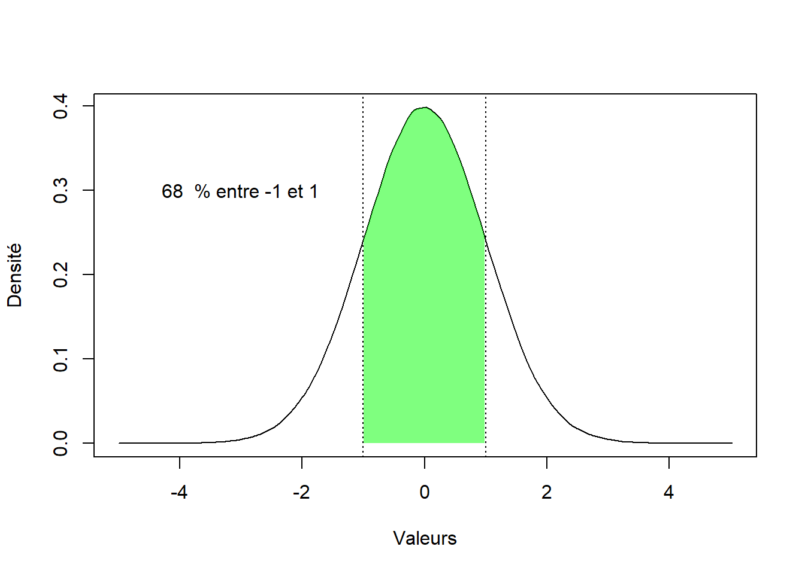
Entre les valeurs, les quantiles -2 et 2, il y a 95 % des individus.
Les valeurs pour -2 et 2 sont respectivement -1,96 et 1,96.
2.6 La médiane et les quantiles usuelles
La médiane est le quantile le plus connu : il sépare 50% des individus à gauche et 50 % des individus à droite. Quand la fonction est symétrique, la médiane est égale à la moyenne.
La médiane est souvent utilisé comme indicatrice de tendance centrale dans le cas où la fonction est très asymétrique où s’il y a des valeurs extrêmes :
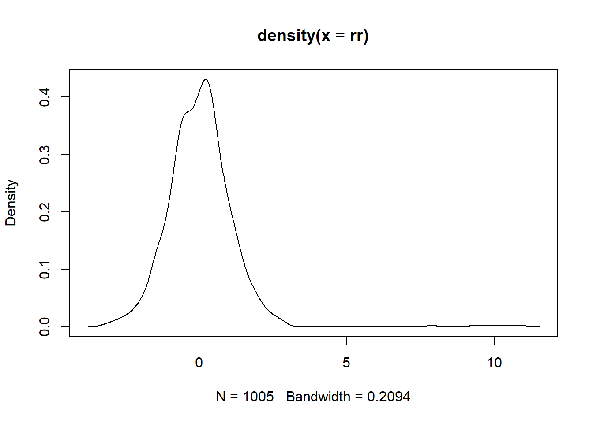 la moyenne est de 0.0524712 et l’écart-type de 1.184008. La moyenne sans les points extrêmes est de 0.0043235 tandis que la médiane est de 0.0391303 avec et de 0.0341976.
Les autres quantiles quantiles les plus fréquents sont les quartiles : 0%, 25%, 50%, 75%, 100%.
2.7 Corrélations
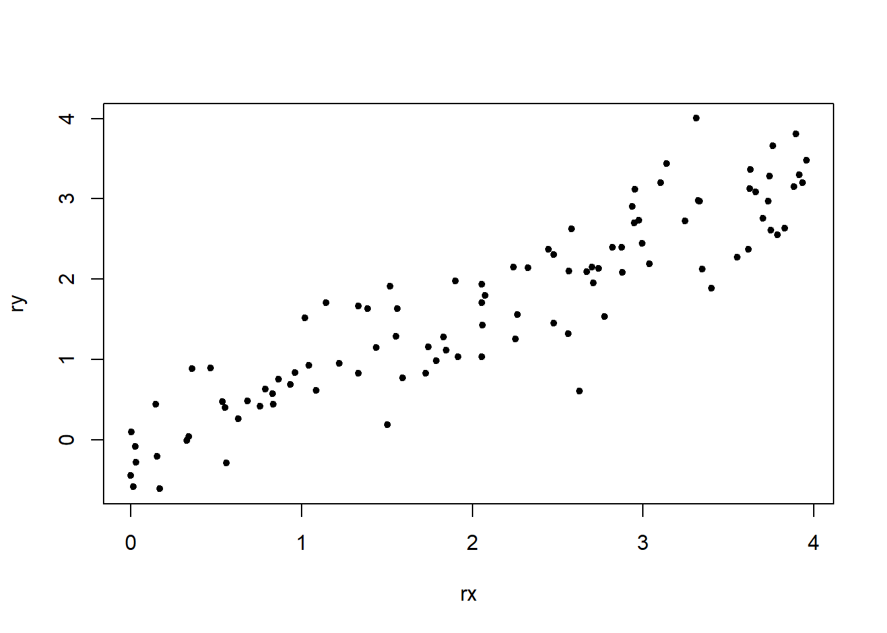
set.seed(42)
rx <- runif(100,0,4)
ry <- 0.8*rx+rnorm(100,sd=0.5)
plot(rx,ry,pch=20)
rr <- lm(ry~rx)
abline(rr)
pos <- which.max(ry)
arrows(rx[pos],predict(rr)[pos],rx[pos],ry[pos],length=0.05,code = 3)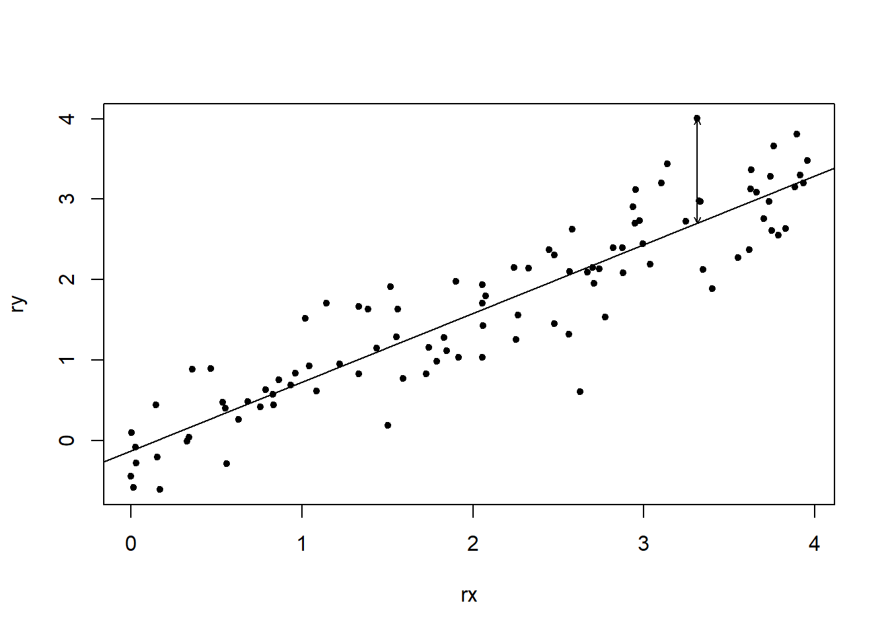
##
## Call:
## lm(formula = ry ~ rx)
##
## Coefficients:
## (Intercept) rx
## -0.1269 0.8545set.seed(42)
rx <- runif(100,-4,4)
ry <- runif(100,-4,4)
plot(rx,ry,pch=20)
rr <- lm(ry~rx)
abline(rr)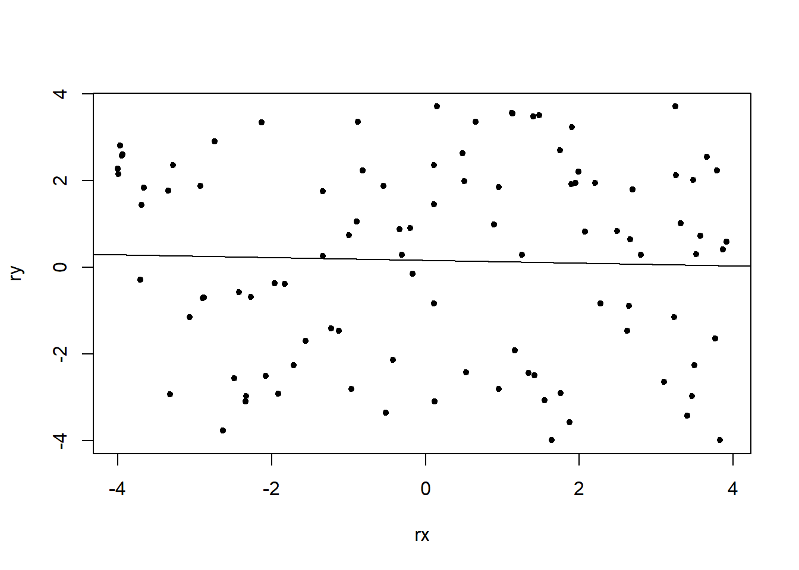
set.seed(42)
rx <- runif(100,-4,4)
ry <- cos(rx)+rnorm(100,sd=0.25)
plot(rx,ry,pch=20)
rr <- lm(ry~rx)
abline(rr)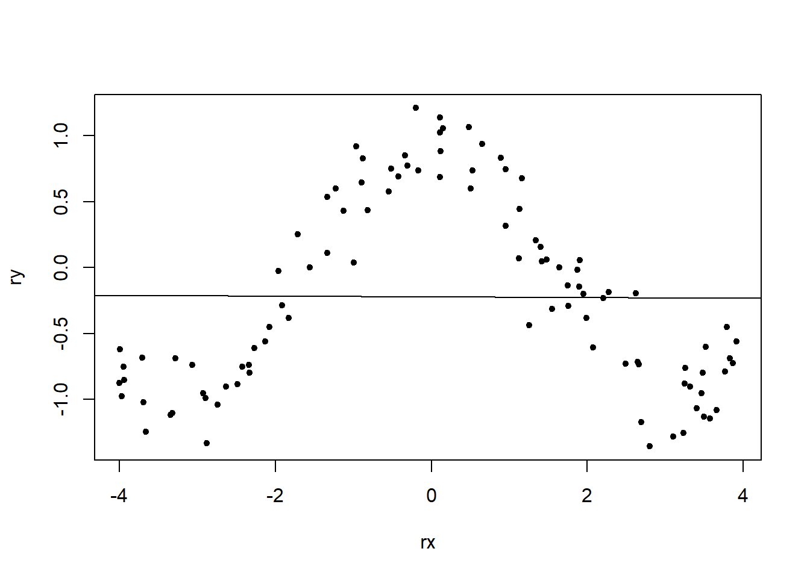
##
## Call:
## lm(formula = ry ~ rx)
##
## Coefficients:
## (Intercept) rx
## -0.221598 -0.002439set.seed(42)
rx <- runif(100,-4,4)
ry <- rx^2+rnorm(100,sd=1)
plot(rx,ry,pch=20)
rr <- lm(ry~rx)
abline(rr)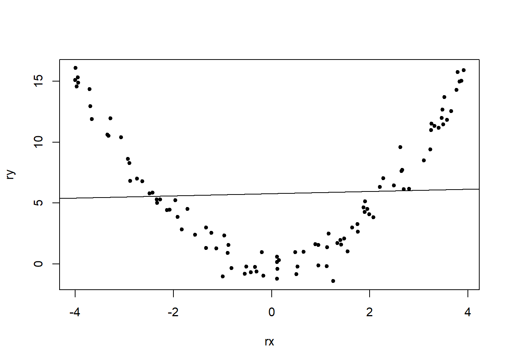
##
## Call:
## lm(formula = ry ~ rx)
##
## Coefficients:
## (Intercept) rx
## 5.77183 0.09141a <- lm(ry ~ rx + I(rx^2))
plot(rx,ry,pch=20)
points(rx[order(rx)],predict(a)[order(rx)],col=rgb(0,0,1),type="l")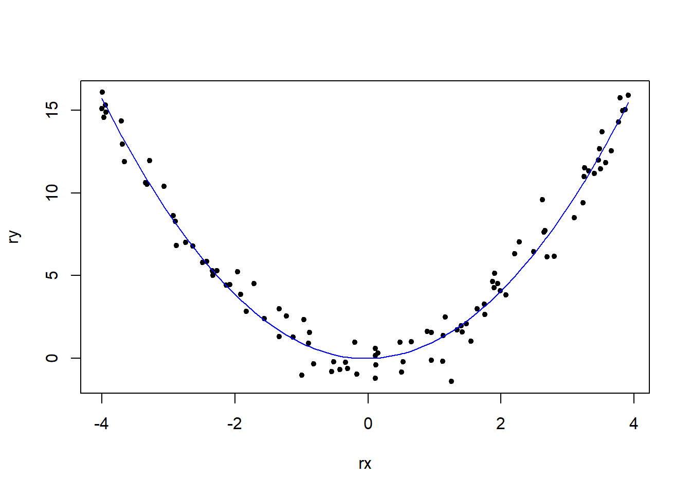
set.seed(42)
rx <- runif(1000,-4,4)
rx <- c(rx[rx >= -4 & rx < -3],rx[rx >= -3 & rx < 0],rx[rx>=0 & rx < 2],rx[rx >= 2 & rx <= 4])
ry <- c(3*rx[rx>= -4 & rx< -3],-4*rx[rx>= -3 & rx< 0],0.2*rx[rx >= 0 & rx<2],6*rx[rx>=2 & rx<=4])
ry <- ry+rnorm(length(ry),sd=0.5)
plot(rx,ry,pch=20)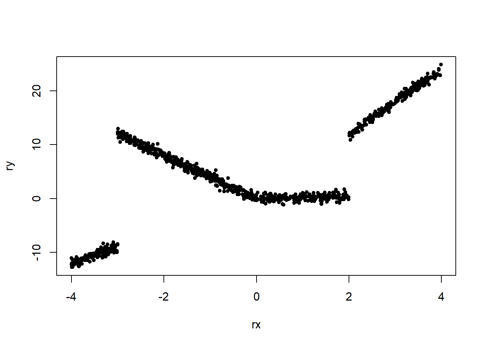
library(splines)
a <- lm(ry ~ ns(rx, df = 4))
plot(rx,ry,pch=20)
points(rx[order(rx)],predict(a)[order(rx)],col=rgb(0,0,1),type="l")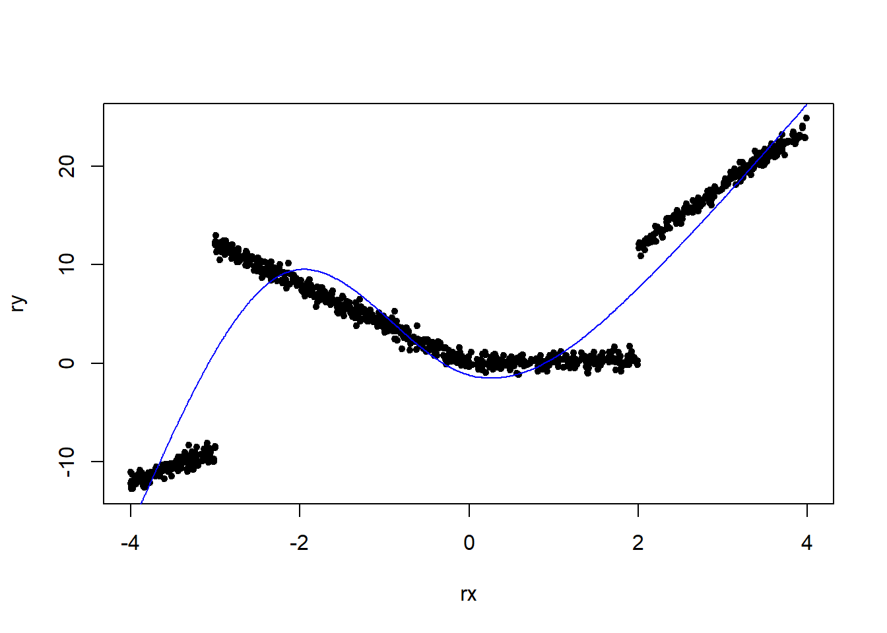
2.8 Covariances
Les covariances sont les carrées des écarts entre les valeurs prises par deux variables aléatoires.
En fait ce sont les corrélations mais avec comme unités les unités naturelles des deux variables et non des écart-types comme unités.
Cela peut être très utile quand on calcule des corrélations entre des grands nombres et des petits nombre. Cela peut être difficile de lire les covariances donc on est amené à réduire les variables.
Par exemple :
Réduire les covariances équivaut à calculer la corrélation.